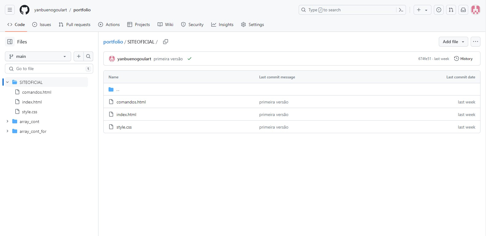

Inicial
Comandos:
- dir - Exibe uma lista de arquivos e subdiretórios em um diretório.
- cd - Muda o diretório atual para outro diretório. Exemplo: cd Documents muda o diretório atual para Documents.
- cls - Limpa a tela do terminal.
- copy - Copia um ou mais arquivos de um local para outro. Exemplo: copy file1.txt file2.txt copia file1.txt para file2.txt.
- move - Move um ou mais arquivos de um local para outro. Também pode ser usado para renomear arquivos.
- del - Deleta um ou mais arquivos. Exemplo: del file.txt deleta o arquivo file.txt.
- mkdir - Cria um novo diretório. Exemplo: mkdir new_folder cria um diretório chamado new_folder.
- rmdir - Remove um diretório. Exemplo: rmdir old_folder remove o diretório chamado old_folder.
- echo - Exibe mensagens na tela ou as redireciona para um arquivo. Exemplo: echo Hello World! exibe Hello World!.
- exit - Fecha o terminal do Prompt de Comando.
- ipconfig - Exibe informações de configuração de rede, como endereço IP, máscara de sub-rede e gateway padrão.
- ping - Verifica a conectividade com outro host na rede. Exemplo: ping google.com verifica a conectividade com o site do Google.
- tracert - Rastreia a rota que os pacotes de dados seguem até um host específico.
- netstat - Exibe estatísticas de rede, incluindo conexões ativas.
- tasklist - Exibe uma lista de todos os processos em execução no sistema.
- taskkill - Finaliza tarefas por PID (identificador de processo) ou nome. Exemplo: taskkill /IM notepad.exe finaliza o bloco de notas.
- sfc - Verifica e repara arquivos de sistema corrompidos.
- chkdsk - Verifica o disco e exibe um relatório de status. Pode também corrigir certos erros.
- diskpart - Uma ferramenta para gerenciamento de partições de disco.
- systeminfo - Exibe informações detalhadas sobre a configuração do sistema e o hardware.
O que é Kernel?
O kernel é o componente central de um sistema operacional de computador, atuando como uma ponte entre os aplicativos e o processamento de dados real realizado a nível de hardware. Sua principal função é gerenciar os recursos do sistema de forma eficiente e justa, permitindo que diferentes programas e processos de usuário façam uso do hardware de maneira segura e controlada.
O kernel realiza várias tarefas importantes, incluindo:
- Gerenciamento de memória: Controla como a memória é alocada para diferentes programas e garante que cada um tenha acesso ao que precisa sem interferir no espaço de outros.
- Gerenciamento de processos e threads: Lida com a criação, execução, pausa e término de processos e threads, além de gerenciar sua priorização e agendamento para execução no processador.
- Gerenciamento de dispositivos: Fornece uma camada de abstração para interagir com o hardware, como discos rígidos, impressoras, e dispositivos de entrada/saída, através de drivers de dispositivo.
- Gerenciamento de arquivos: Controla como os dados são armazenados, acessados e gerenciados nos dispositivos de armazenamento.
- Comunicação entre processos: Facilita a comunicação e a sincronização entre processos em execução, permitindo que eles compartilhem dados de forma segura.
Sistemas Operacionais
- Windows - Uma família de sistemas operacionais desenvolvida pela Microsoft, conhecida por sua interface gráfica de usuário.
- macOS - O sistema operacional para computadores Mac, desenvolvido pela Apple Inc., conhecido por sua ênfase em design e integração com outros dispositivos Apple.
- Linux - Um sistema operacional de código aberto baseado no kernel Linux, amplamente usado em servidores, dispositivos móveis (Android), e por entusiastas de tecnologia e profissionais.
- Unix - Um sistema operacional portátil, multitarefa e multiusuário, originalmente desenvolvido nos anos 70, e que se tornou a base para muitos outros sistemas, incluindo Linux e macOS.
- Android - Baseado no kernel Linux, é um sistema operacional desenvolvido pela Google para dispositivos móveis, como smartphones e tablets.
- iOS - O sistema operacional móvel da Apple, utilizado no iPhone, iPad, e iPod Touch.
CLI e GUI
- CLI: é um tipo de interface onde o usuário interage com o sistema operacional através de linhas de texto. O usuário digita comandos em texto por meio de um terminal ou console, e o sistema responde da mesma forma.
- GUI: é uma interface visual que utiliza elementos gráficos como janelas, ícones, botões e menus para a interação. É o tipo de interface mais comum em sistemas operacionais modernos como Windows, macOS e muitas distribuições de Linux.
Comandos operacionais - Linux
- cd: Muda o diretório
- ls: Mostra os arquivos do diretório atual
- netstat: Mostra estatísticas de rede e informações de conexão.
Comandos operacionais - Windows
Versionamento
O versionamento, ou controle de versão, é uma prática essencial em desenvolvimento de software que envolve o gerenciamento de alterações feitas em documentos, programas de computador, sites
e outras informações relacionadas a desenvolvimento. Essa prática permite que múltiplos usuários ou equipes trabalhem em conjunto e de maneira organizada, possibilitando o rastreamento de cada
modificação feita ao longo do tempo.
Repositório
Um repositório no GitHub é um espaço de armazenamento centralizado para um projeto, onde você pode manter, gerenciar, organizar e controlar todas as versões dos arquivos do projeto usando o sistema
de controle de versão Git.
O GitHub, sendo uma das plataformas de hospedagem de código mais populares e amplamente utilizadas, oferece uma interface web robusta para
o gerenciamento de repositórios Git, além de funcionalidades adicionais para colaboração e desenvolvimento de software.

Deploy
O termo "deploy" (ou implantação) refere-se ao processo de disponibilizar uma aplicação de software para uso, seja pelos usuários finais ou para um ambiente de produção após a fase de desenvolvimento e teste. Este processo é uma parte crítica do ciclo de vida de desenvolvimento de software e envolve várias etapas que garantem que o software funcione corretamente no ambiente para o qual está sendo implantado.